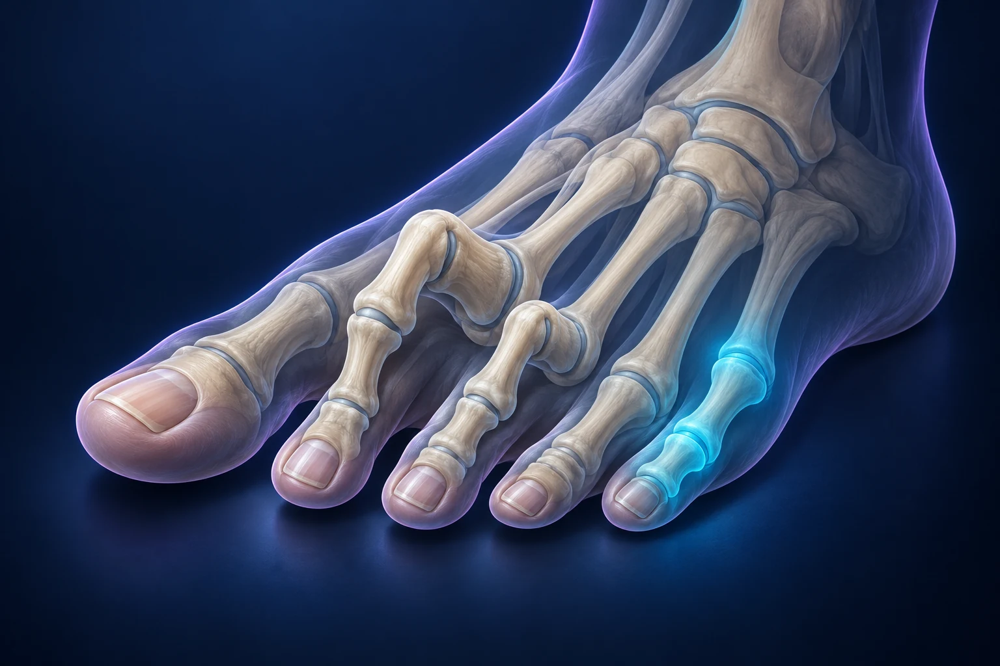

Orteils en griffe : comment choisir une correction adaptée ?

Un orteil recroquevillé ne nécessite pas systématiquement une opération. Le traitement dépend des douleurs, du chaussage, de l’état de la peau et de la souplesse de la déformation. Lorsqu’une chirurgie est discutée, son objectif est de rendre le pied plus confortable et fonctionnel. Il faut examiner l’ensemble de l’avant-pied pour comprendre pourquoi l’orteil s’est déformé.
Que signifie « orteil en griffe » ?
Les petits orteils peuvent se plier de différentes façons. Une griffe associe des modifications de position au niveau de plusieurs articulations ; d’autres formes sont appelées orteil en marteau ou en maillet. Les termes décrivent la déformation, mais ne suffisent pas à en expliquer la cause ni à choisir le traitement. AAOS, orteils en griffe.
On peut comparer l’orteil à une petite chaîne articulée tenue par plusieurs tendons. Une modification de l’équilibre peut déplacer plusieurs maillons. Redresser visuellement le dernier maillon ne résout donc pas nécessairement tout le problème. Cette image aide à comprendre pourquoi le chirurgien regarde aussi la base de l’orteil et les appuis sous le pied.
Quelles gênes doivent être décrites ?
Le frottement contre la chaussure peut provoquer des cors ou des zones de peau épaissie. Une pression peut également apparaître à l’extrémité de l’orteil ou sous l’avant-pied. Une déformation peut ainsi gêner le chaussage et limiter certaines activités. Kent Community Health NHS, déformations des petits orteils.
Indiquez précisément le point douloureux et les chaussures concernées. La gêne est-elle présente pieds nus, avec des chaussures fermées, en fin de journée ou seulement pendant le sport ? Une photographie personnelle montrant une irritation intermittente peut compléter votre récit, mais elle ne remplace pas l’examen.
Pourquoi distinguer une griffe souple d’une griffe fixée ?
Une déformation encore réductible et une articulation devenue rigide ne présentent pas les mêmes possibilités de correction. L’examen recherche aussi d’éventuels troubles neurologiques ou musculaires et apprécie les facteurs associés. Une déformation récente ou une modification rapide mérite d’être signalée. AAOS, bilan et souplesse des orteils.
Vous n’avez pas à forcer l’orteil pour vérifier vous-même sa souplesse. Décrivez plutôt depuis quand sa position a changé et ce qui a évolué. Si vous avez un diabète, une perte de sensibilité ou un problème circulatoire, mentionnez-le : ces informations sont essentielles pour examiner la peau et préparer les soins.
Peut-on commencer par le chaussage et les protections ?
Une chaussure suffisamment large et profonde à l’avant limite certains conflits. Des protections et des adaptations peuvent être proposées selon les zones de pression. Le choix dépend de la forme de l’orteil et de l’état cutané ; l’objectif est de diminuer la gêne sans créer une nouvelle compression. AAOS, traitements non chirurgicaux.
Apportez les semelles ou protections déjà utilisées. Expliquez ce qui a aidé, ce qui était inconfortable et ce qui ne rentrait pas dans vos chaussures. Si une plaie apparaît, demandez un avis médical, particulièrement en cas de trouble de sensibilité. Une correction esthétique n’est pas le premier objectif lorsqu’il existe un problème de peau.
Quelles interventions peuvent être proposées ?
Selon la déformation, le traitement peut porter sur les tendons, les tissus autour de l’articulation ou les os. Une articulation peut être redressée puis fusionnée ; une correction à la base de l’orteil ou sur un métatarsien peut parfois être associée. Le geste est choisi à partir du mécanisme observé. Kent Community Health NHS, chirurgie des petits orteils.
Demandez un schéma indiquant les articulations concernées. Une broche ou un autre moyen de fixation peut être utilisé dans certains parcours : faites préciser s’il sera retiré, à quel moment et quelles protections seront nécessaires. Le nombre d’incisions ne renseigne pas, à lui seul, sur l’importance de la correction ni sur les suites.
Peut-on garantir un orteil parfaitement droit ?
L’objectif doit être discuté avant la décision : diminuer un conflit avec la chaussure, améliorer un appui ou traiter une déformation douloureuse. Des limites existent. Un orteil peut rester raide, ne pas reprendre exactement le contact attendu avec le sol ou présenter une récidive. Une infection, une cicatrice sensible et un gonflement prolongé font aussi partie des risques à expliquer. Kent Community Health NHS, limites et complications possibles.
Pour éviter un malentendu, dites ce que vous espérez concrètement. Voulez-vous porter vos chaussures de travail sans frottement, marcher davantage ou supprimer une irritation récurrente ? Une attente exprimée clairement permet de discuter ce qui est réaliste et ce qui ne peut pas être promis.
Comment organiser la récupération ?
Avant la sortie, faites préciser la protection, les soins du pansement, l’appui et les rendez-vous. Demandez quelles aides seront nécessaires et qui joindre si une difficulté apparaît à domicile. Ces informations doivent être adaptées à l’opération effectuée. NHS, organiser les suites d’une intervention.
Prévoyez des chaussures adaptées au moment autorisé, vos trajets et une organisation compatible avec votre travail. Évitez de fixer vous-même une date de reprise à partir de l’expérience d’un proche. Deux interventions sur les orteils peuvent avoir des contraintes différentes selon les gestes associés.
Vous pouvez prendre rendez-vous avec le Dr François Lozach à Sète avec vos examens et vos chaussures habituelles pour discuter d’une correction adaptée à votre gêne.
Ces conseils sont d’ordre général et ne remplacent pas un avis médical personnalisé.